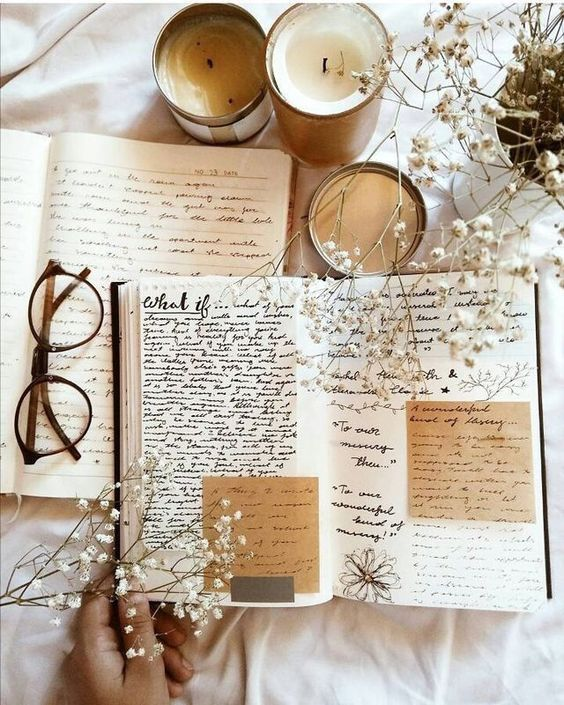

- Tiny Beautiful Things by Cheryl Strayed
- Unorthodox by Deborah Feldman
- Heartburn by Nora Ephron
- Little Fires Everywhere by Celeste Ng

I'm also taking book title suggestions. Please let me know if you have a book that you think is a timeless read in the form below: